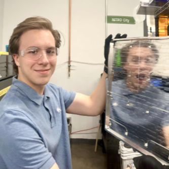

Hot Plate (Formlabs)
Mechanical Engineering Internship
Work In Progress
I worked as a Mechanical Engineering Intern at Formlabs during the Summer of 2024, focusing on SLS (Selective Laser Sintering) hardware development. Specifically, I worked on hot plate systems and testing jigs.
